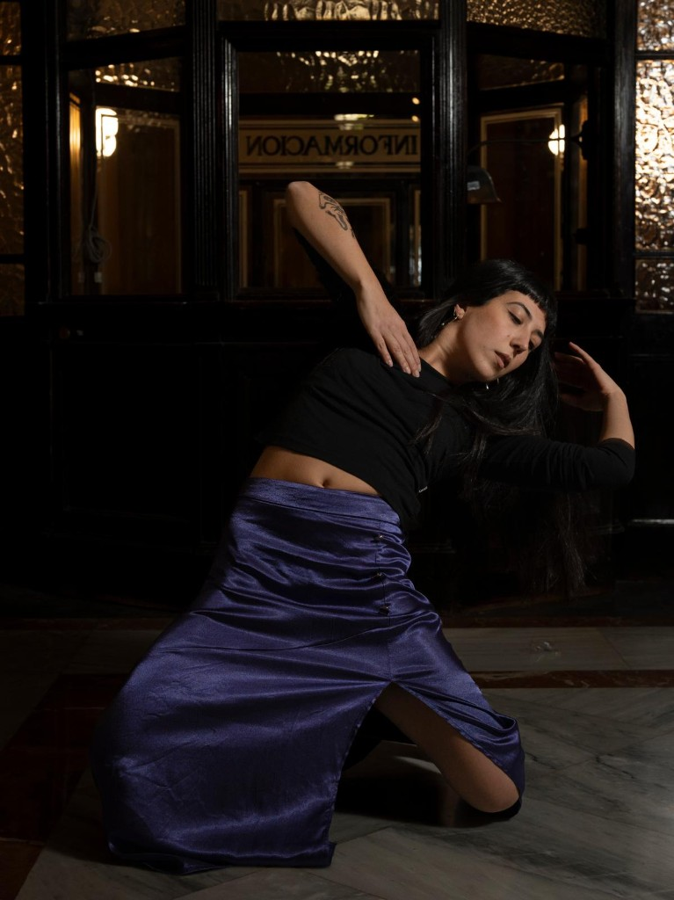
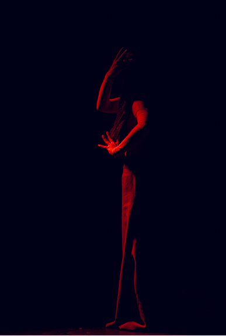
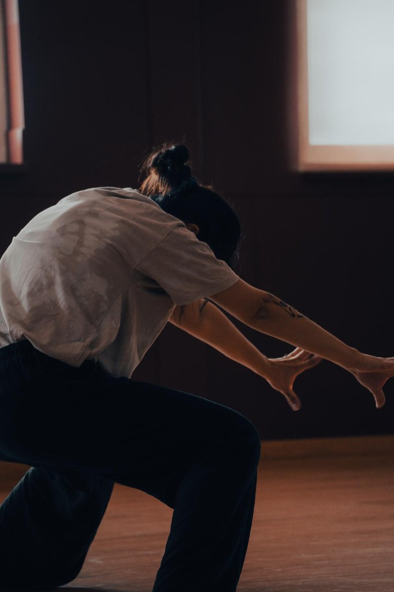

2026: “SIMBIOSIS” by Catalina Varela, Brussels, Belgium.
2025: “A-STRATI” with Federica Franzini and Chiara Mesiani, Brussels, Belgium.
2025: “SOIDCIUS” with Chiara Olivia Pernicini, Barcelona, Spain.
2023: “Tu carne serà mi poema” by Skin Signal Barcelona, Spain.
2022: “ECHI confessioni danzate di un borgo” with Vaga Project, Padova, Italy
2022: “City Horses” by Anna Källblad and Helena Byström, Olot, Figueras, Barcelona, Spain and Prague, Czech Republic.
2022: “WHAT REALLY HAPPENS?!” by Moimentu Dance Company, Sardinia, Italy.
2021: “FUGA DA ESCHER” with Vaga Project, Milan, Italy.
2021: “I Tre Lati del Cerchio” with Vaga Project, Barletta, Italy.
2021: “Ravanare” with Chiara Mesiani and Angelica Squicciarini, Milan, Italy.
2019: “ROLLING IDOLS” by Susanna Beltrami, Milan, Italy.
2019: “Holyland” by Stefano Fardelli, Milan, Italy.
2018: “WALK. Viaggio in un’oscurità cosciente” by Arianna Guaglione, Milan, Italy.
2018: “Le Sacre du Printemps” by Susanna Beltrami, Milan, Italy.
2017: “Lalalend” by Matteo Bittante, Milan, Italy.
2017: “Links” by Stefano Fardelli, Milan, Italy.
2017: “Awakening the Sleeping Beauty” by Susanna Beltrami, Milan, Italy.
2015: “AB-AMAI” by Cathy Marchand, Sardinia, Italy.

2026: “Umbral” the participants of the Intensive Workshop on Contemporary Dance, Barcelona, Spain
2026: “Soucis” for Irina Barthes, Barcelona, Spain
2025: “A-STRATI” with Chiara Mesiani and Federica Franzini, Brussels, Belgium.
2025: “SOIDICIUS” Barcelona, Spain.
2025: “Arpz Love” video clip for Joselito Ke, Barcelona, Spain.
2025: “Look How Empty I Am” created for Chiara Mesiani, Brussels, Belgium.
2024: “28” dance video for Darwin Bullé, Madrid, Spain.

2025-present: Contemporary teacher at Centre Civic Teixonera (Barcelona) and Scuola Milene (Italy)
2026: Workshop Conecta Y Fluye (Brussels)
2026: Workshop Abstract Moves (Perugia, Italy)
2026: Workshop Abstract Moves at Centre Civic La Teixonera (Barcelona)
2024: Workshop Abstract Moves at Centre Civic La Sedeta, Festival TUDANZAS and Calapanarra (Barcelona)
2023: Workshop Automansaje y estiramiento (TACCbcn, Barcelona)
2023: Contemporary teacher at Dancescape (Lleida-Barcelona)
2022: contemporary teacher for the workshop at Scuola Milene (OR, Italy)
2020/2021: Ballet tecaher at Liberi Di School (MI, Italy)
2019/2020: Ballet and modern dance teacher at ADS Maris Team (CR, Italy)